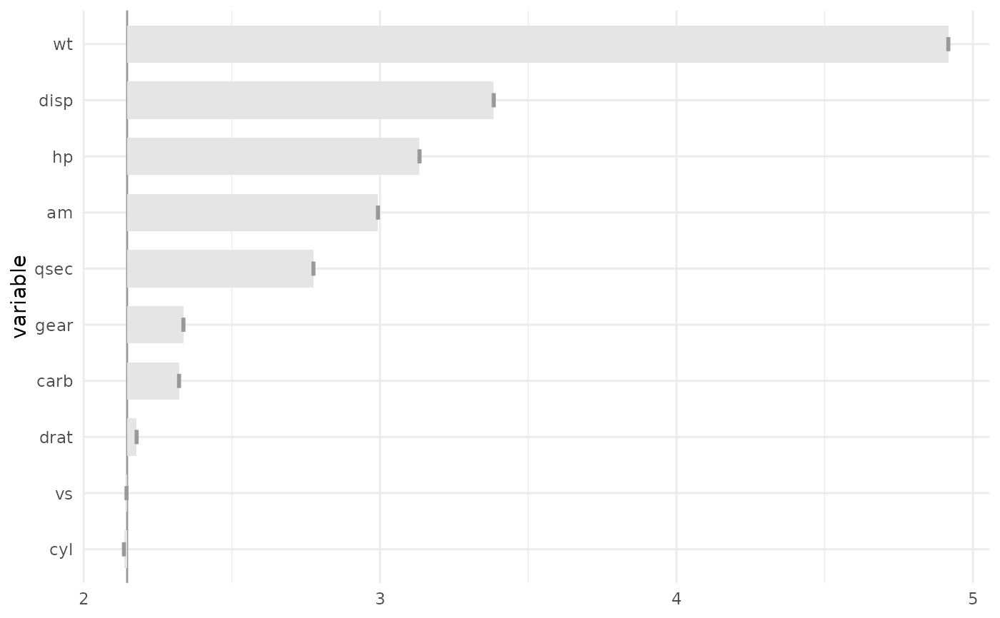

Variable importance via variable permutations
Source:R/variable_importance.R
variable_importance.RdVariable importance via variable permutations
Usage
variable_importance(
object,
data = NULL,
variables = NULL,
response = NULL,
loss_function = NULL,
iterations = 1,
sample_size = NULL,
sample_frac = NULL,
predict_function = NULL,
parallel = FALSE,
verbose = TRUE
)Arguments
- object
The model object.
- data
A data to calculate the loss_function.
- variables
Variables to use.
- response
Name of the variable response.
- loss_function
The loss function to evaluate, Must be a function with 2 arguments: actual and predicted values. Loss function gives a smaller value if the model have better performance of the model.
- iterations
Number of iterations.
- sample_size
Sample size.
- sample_frac
Proportion to sample in each iteration.
- predict_function
Predict function, usually is a function(model, newdata) which returns a vector (no data frame).
- parallel
A logical value indicating if the process should be using
furrr::future_pmap_dblorpurrr::pmap_dbl.- verbose
A logical value indicating to show progress bars.
Examples
lm_model <- lm(mpg ~ ., data = mtcars)
vi <- variable_importance(
lm_model,
response = "mpg",
data = mtcars
)
#> ℹ Using all variables in data.
#> ℹ Using root mean square error as loss function.
#> ℹ Using `base::identity` as sampler.
#> ℹ Using `predict.lm` as predict function.
plot(vi)
